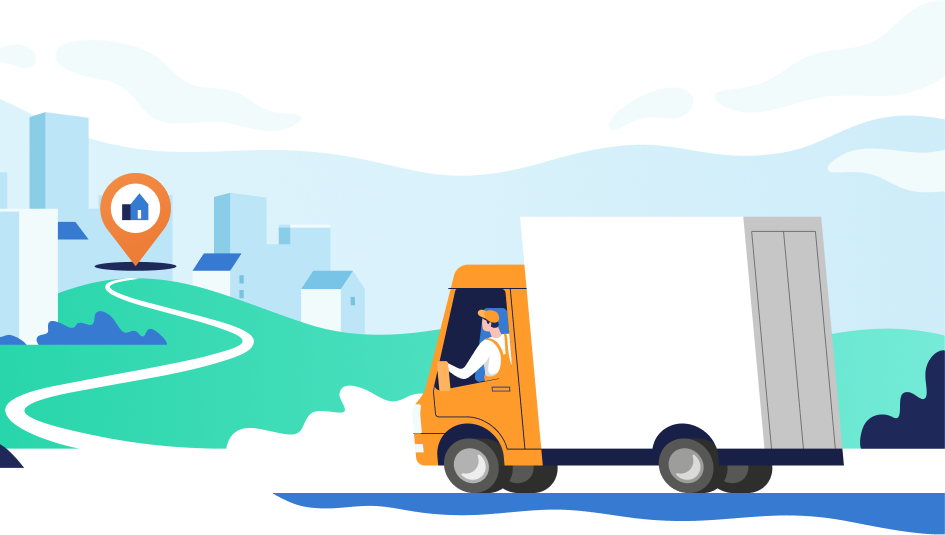

Welcome To Page!
Planning routes and optimizing the delivery process
The purpose of route planning and optimization is to ensure efficiency and cost-effectiveness in the delivery of goods. This means reducing delivery time and costs, lowering fuel and other operating costs, improving customer service, and ensuring that goods are delivered reliably and quickly to customers. The goal of optimizing the delivery process is to maximize efficiency and route optimization, ensure on-time delivery, and meet customer needs.
Delivery optimization

Delivery optimization is the process of increasing the efficiency and reducing the cost of delivering goods or services from the point of production to the destination. This process includes selecting the most efficient delivery routes, making the best use of resources (e.g., vehicles and employees), and minimizing fuel costs, vehicle wear and tear, and other operating expenses.
Delivery optimization can be especially important for e-commerce companies that have a large number of orders, as well as for companies that operate warehouses and distribution centers. Delivery optimization can help reduce shipping costs and improve customer experience.